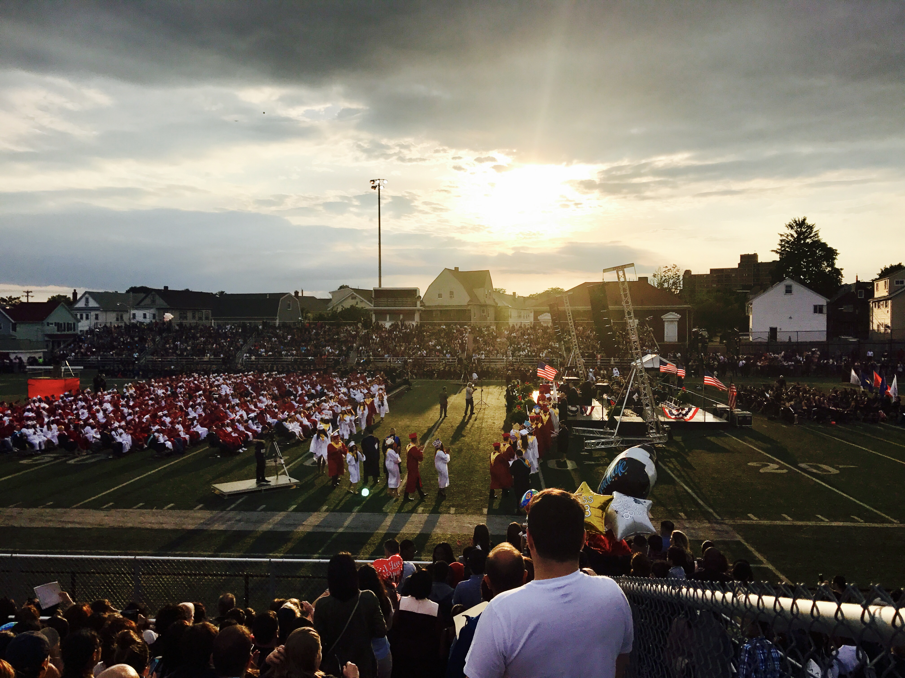

|
|
Academy Administration
|
Contact: enaumann@everett.k12.ma.us Contact: cbarrett@everett.k12.ma.us |
Contact: oeasy@everett.k12.ma.us Contact: kmccormack@everett.k12.ma.us |
|
Freshman Experience: Assistant Principal: TBA Contact: TBA@everett.k12.ma.us Guidance Counselor: TBA Contact: TBA@everett.k12.ma.us Science, Technology & Engineering: Assistant Principal: TBA Contact: TBA@everett.k12.ma.us Guidance Counselor: TBA Contact: TBA@everett.k12.ma.us Health, Law & Public Service: Assistant Principal: TBA Contact: TBA@everett.k12.ma.us Guidance Counselor: TBA Contact: TBA@everett.k12.ma.us |
Construction, Machining & Architectural Design: Assistant Principal: TBA Contact: TBA@everett.k12.ma.us Guidance Counselor: TBA Contact: TBA@evrett.k12.ma.us Business, Hospitality & Culinary Arts: Assistant Principal: TBA Contact: TBA@everett.k12.ma.us Guidance Counselor: TBA Contact: TBA@everett.k12.ma.us |
Graduation
|
Credits: Every student needs 110 credits to graduate. Each student takes 40 credits each year (8 classes of 5 credits each) MCAS: To receive a high school diploma, students must achieve a passing score of 220 or more on all 3 MCAS exams (Biology, English, Math). Students scoring advanced on their first try may be eligible for the John and Abigail Adams College Scholarship. |
MCAS Practice Exams: |
The ACCESS Test
All EL students will take the Access Test once per year in January. The ACCESS Test measures an EL student's English improvement in the domains of reading, writing, listening and speaking, and also helps teachers determine which classes will best help the student.
Students will receive a score that places them in one of these six levels:

Students are looking to improve by 1.0 on the WIDA scale each year. A perfect score of 6.0 Overall is equivalent to a native English speaker.
|
Entering:
Beginning:
Expanding:
|
Expanding:
FLEP: Students have scored both a 3.9 or above in Literacy and a 4.2 or above Overall. At this point, students will no longer take ESL classes, but language support will still be provided. |
To view a sample Student Score Report, click English or Spanish.